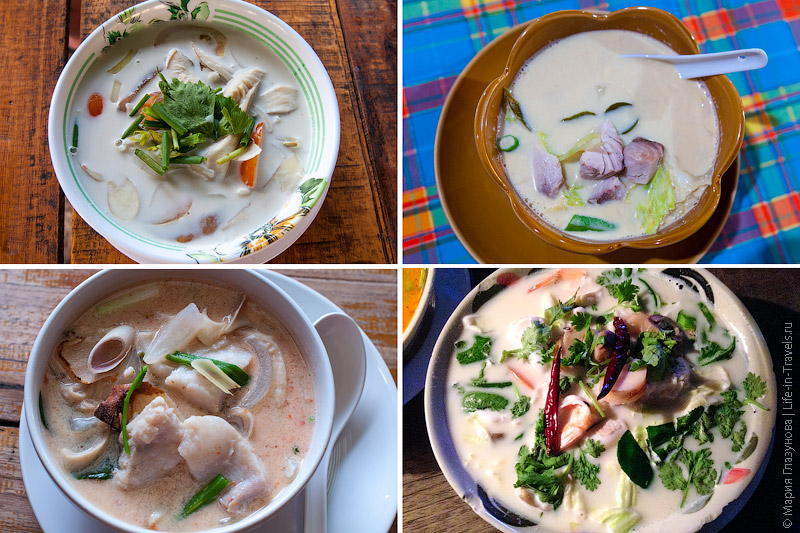
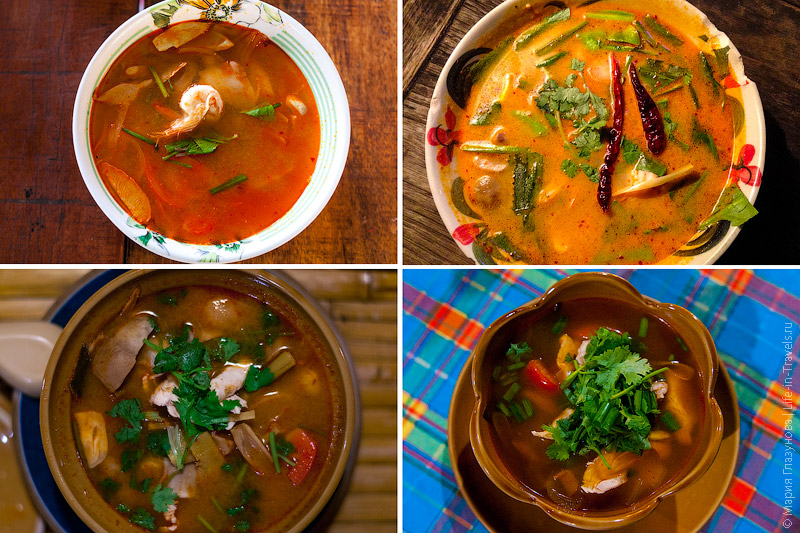
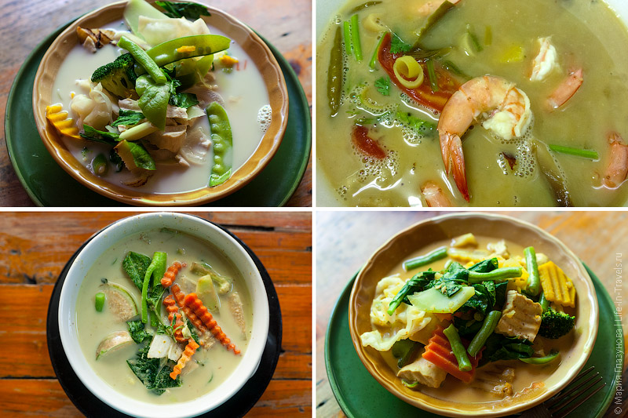
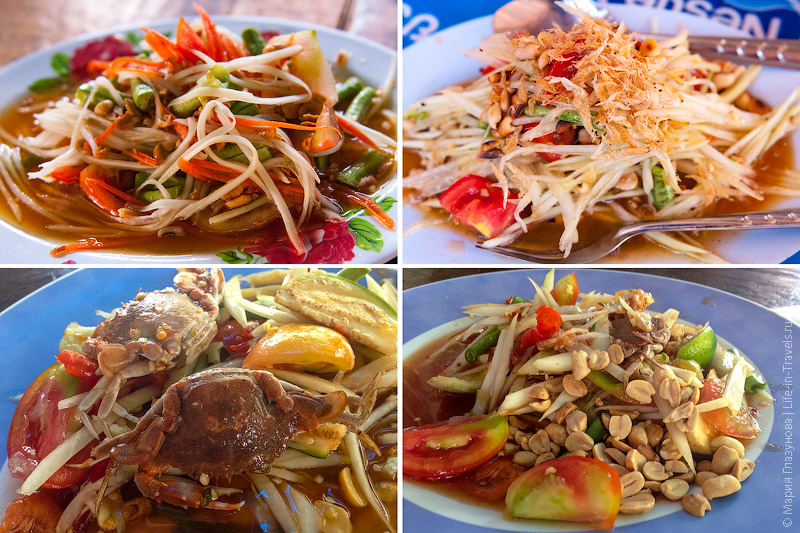
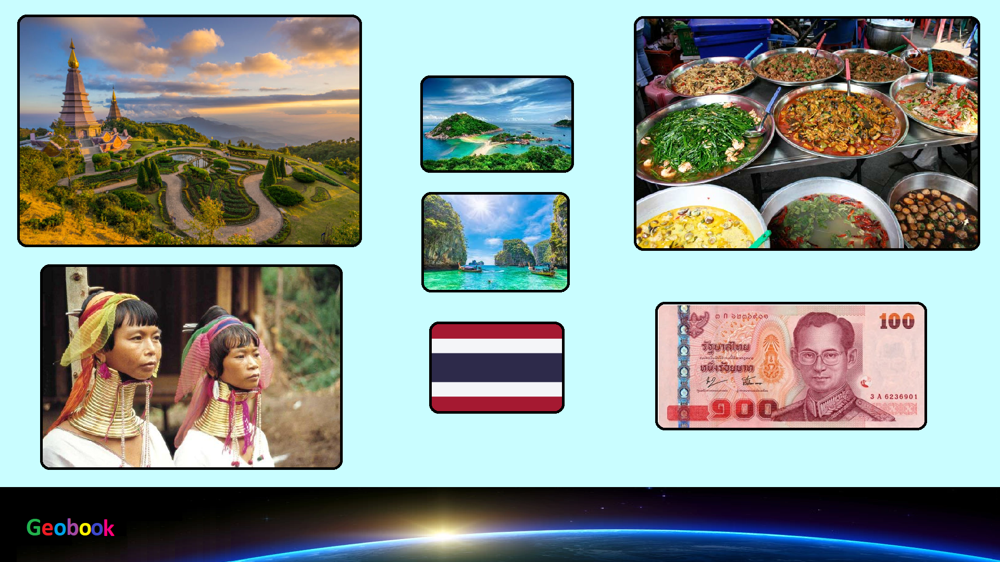

____
Традиционная еда
Том Кха (Tom Kha) — Сладковатый суп на кокосовом молоке. Из всей тайской кухни больше всего полюбился нам именно он.

Том Ям (Tom Yum) — Это, пожалуй, самое знаменитое блюдо в тайской кухне, и даже если вы еще не были в Таиланде, то наверняка, как минимум, слышали об этом кисло-остром супе с лемон грассом, галангалом и листьями лайма. За счёт обилия специй, суп имеет очень специфический и запоминающийся вкус.

Зеленый карри (Green Curry). — Основой этого блюда является специальная паста, которая состоит из перчиков чили, лемонграса, листьев лайма, базилика, креветочной пасты и кокосового молока.

Салат с зеленой папайей/манго — Салат из зеленой папайи (или зелёного манго), с дробленым арахисом, зеленой фасолью, помидорами, огурцами, сушеными креветками, рыбным соусом и, конечно перчиками чили. Отличить по вкусу зеленую папайю от зеленого манго в салате у нас так и не получилось.

____
